Recebimentos
No Frente de Caixa é possível usar diversos TIPOS DE RECEBIMENTOS ao baixar vendas. A seguir abordaremos de forma resumida cada um dos tipos ao receber uma venda.
Vamos simular a baixa de um abastecimento até chegarmos no momento de receber a venda e lá mostraremos os detalhes desses recebimentos numa venda ao CONSUMIDOR.
No painel à direita temos diversas opções de TIPOS DE RECEBIMENTOS e deles derivam as mais variadas Formas de Recebimentos.
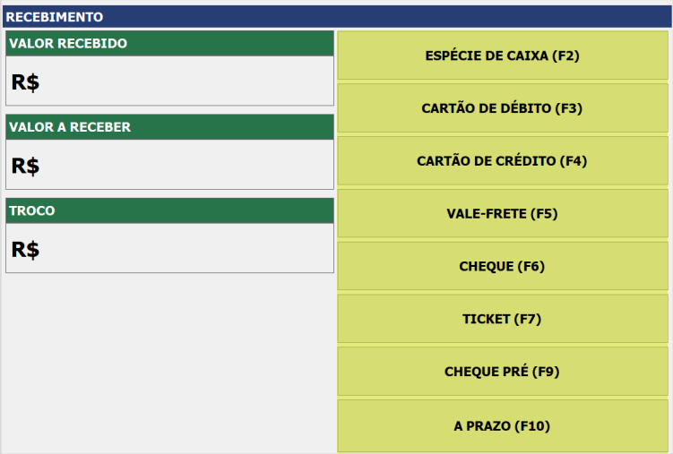As FORMAS DE RECEBIMENTOS vêm dos tipos de recebimentos. Vejamos dois exemplos a seguir, sendo o tópico 10, uma venda baixada por Espécie de Caixa e o tópico 11, uma venda sendo baixada por Cartão de Débito
ESPÉCIE DE CAIXA (F2)
Para baixar uma venda com Dinheiro basta pressionar o botão ESPÉCIE DE CAIXA (F2).
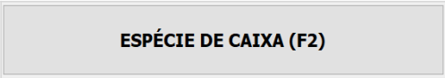No campo Valor a Receber preencha com o valor menor para completar com outro tipo; ou preencha com valor igual para completar o total da venda ou preencha com valor maior para voltar o troco.
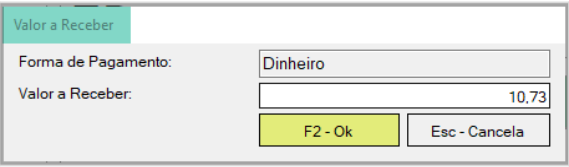CARTÃO DE DÉBITO (F3)
Para baixar uma venda com Cartão de Débito basta pressionar o botão CARTÃO DE DÉBITO (F3).
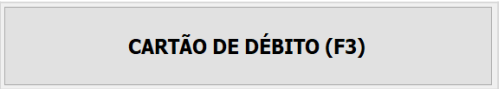Na janela Forma de Recebimento escolha a bandeira do CARTÃO DE DÉBITO na lista de opções e pressione o botão F2 - Ok. Depois, no campo Valor a Receber, preencha com o valor menor para completar com outro tipo; preencha com valor igual para completar o total da venda ou preencha com valor maior para voltar o troco.
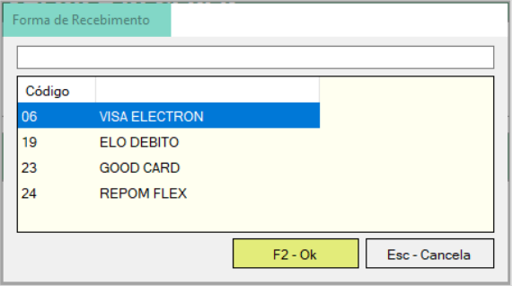CARTÃO DE CRÉDITO (F4)
Para baixar uma venda com Cartão de Crédito basta pressionar o botão CARTÃO DE CRÉDITO (F4).
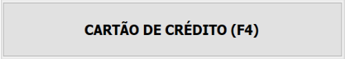Na janela Forma de Recebimento escolha a bandeira do CARTÃO DE CRÉDITO na lista de opções e pressione o botão F2 - Ok. Depois, no campo Valor a Receber, preencha com o valor menor para completar com outro tipo; preencha com valor igual para completar o total da venda ou preencha com valor maior para voltar o troco.

VALE-FRETE (F5)
Para baixar uma venda com Vale-Frete basta pressionar o botão VALE-FRETE (F5)
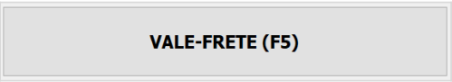Na janela Vale Frete selecione o botão F3 - Adicionar Vale Frete
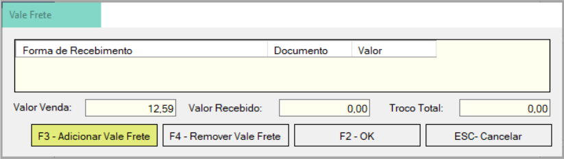Na janela Forma de Recebimento escolha a CARTA FRETE e pressione o botão F2 - Ok
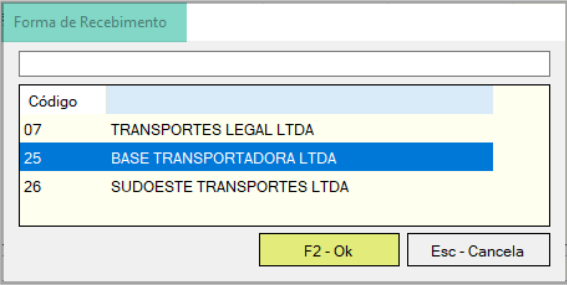Agora preencha os dados da CARTA FRETE e pressione o botão F2 - Ok
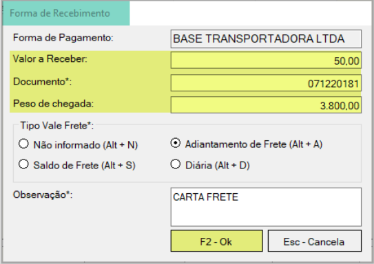Volte na janela Vale Frete, selecione a CARTA FRETE adicionada e pressione o botão F2 - OK.
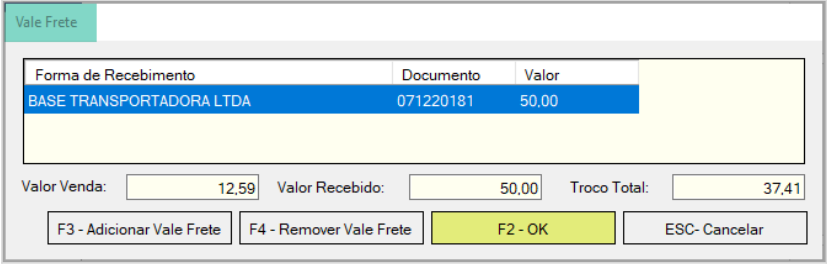Normalmente a CARTA FRETE possui TROCO, então, na janela Troco escolha o CHEQUE TROCO ou digite o valor do VALE CRÉDITO para dar o troco ao cliente.
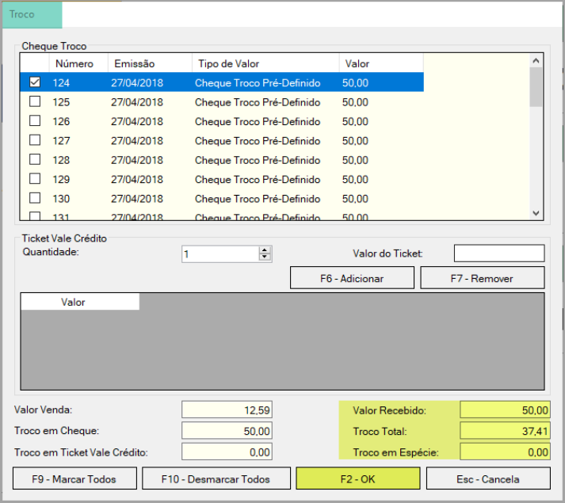